Tesseract Web Demo
Beautiful Ideas, Stark Design.
Web-based Presentation
Some notes
Web-based Presentations
What?
Tesseract is a web-based presentation framework for CSS and JavaScript. Your presentations can be written in HTML and presented on any computer with a web browser. Simply type in the link to the presentation, and your slides are ready in seconds.
Why?
Web-based presentations solve compatibility while being insanely easy to share, and with Tesseract's default templates, there's no basic design to worry about. That. Simple.
How?
Tesseract has 2 components. The styles, managed by a single CSS stylesheet, and the presentation toolbar, managed by a single Javascript file. The slides are written in HTML.
Some more notes here
And some more notes about the prez here
Adaptability, Versatility
While the default templates are easy to work with and cleanly designed, the possibilities of additional styling and customizations are endless and simple.
Have a new nagivation feature to add? New fonts? Different backgrounds? Want to hide a slide quickly or delete a button from the toolbar? Your solutions are just a line of HTML markup away.
By Default...
The Toolbar
The toolbar controls presentation nagivation, and supports...